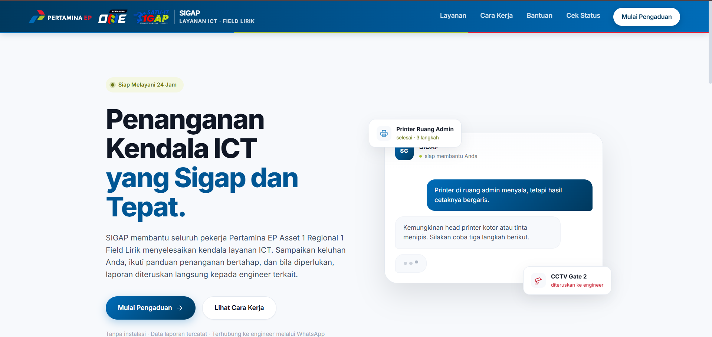
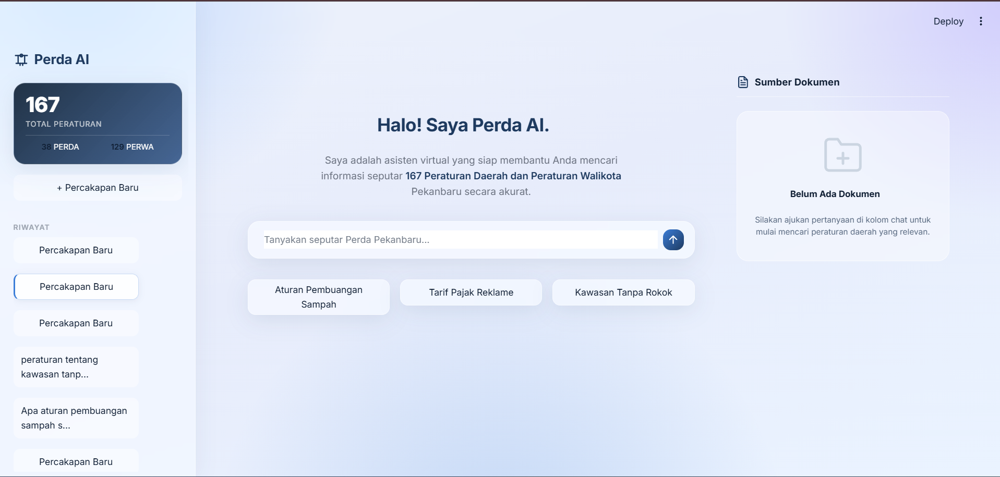
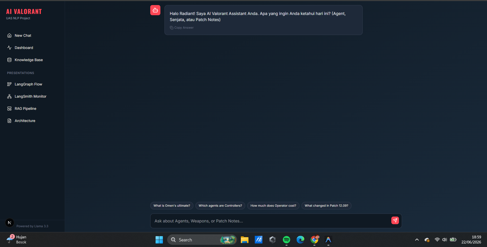
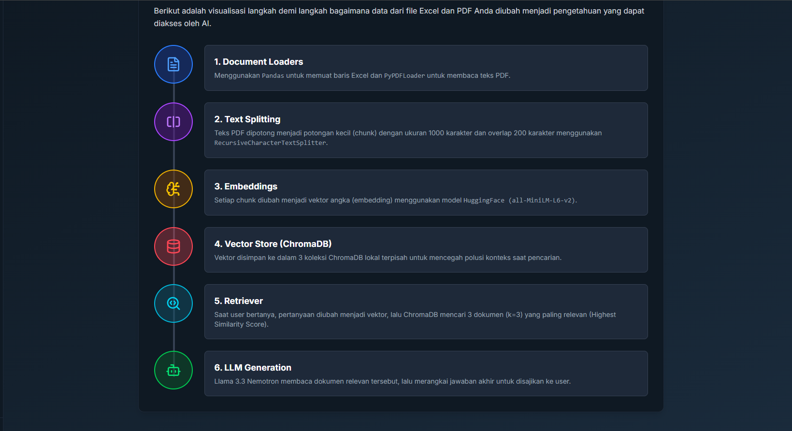
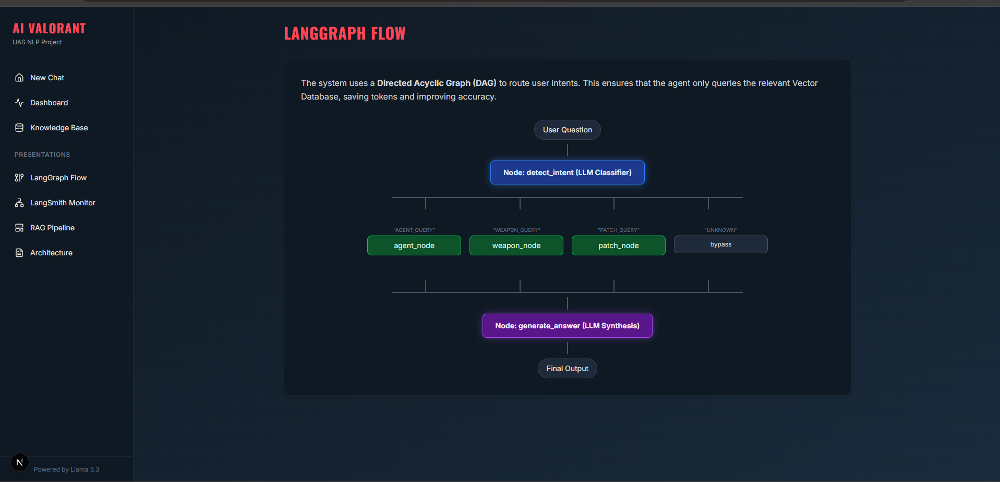
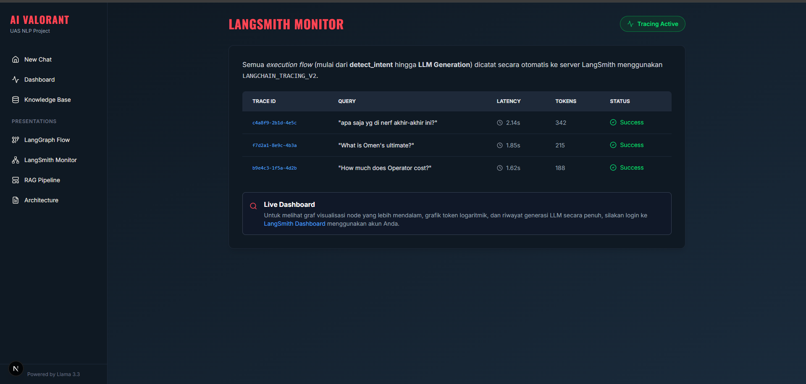
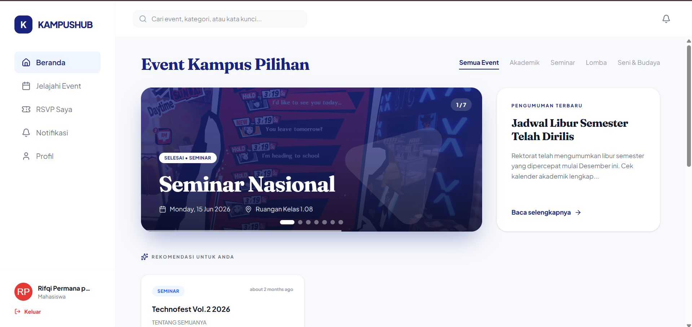
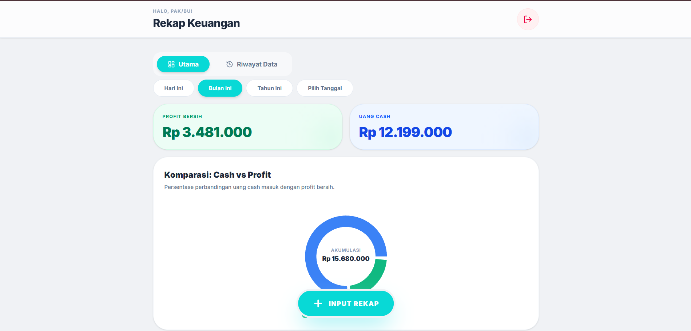

WORKS
PROYEK
Lima proyek, lima masalah yang saya lihat sendiri. Dua dikerjakan bertim, tiga sendirian.
KERJA PRAKTIK · 2026
SIGAP
Masalahnya
Pekerja di Field Lirik yang kena masalah ICT (printer bermasalah, CCTV mati, jaringan putus) tidak punya jalur pelaporan yang jelas. Keluhan mengalir lewat obrolan pribadi, tidak tercatat, dan sering berulang untuk masalah yang sebetulnya sudah pernah diselesaikan.
Yang kami bangun
Sistem mencocokkan kata kunci di keluhan dengan panduan SOP yang sudah tersimpan, lalu menuntun penggunanya selangkah demi selangkah. Kalau tetap belum selesai, laporannya diteruskan ke engineer divisi terkait lewat WhatsApp. Semua laporan tercatat, ada dasbor rekap harian sampai bulanan, dan terlihat solusi mana yang paling sering berhasil.

TEKNOLOGI
- Node.js 22.5+
- Express
- SQLite
- scrypt
- React
- Vite
- PowerShell
- Ekspor XLSX
PROYEK KULIAH · 2026
PERDA AI
Masalahnya
Warga yang mau tahu isi peraturan daerah harus buka situs resmi, menebak dokumen mana yang benar, mengunduhnya, lalu membaca puluhan halaman cuma untuk menemukan satu pasal. Melelahkan di tiap langkahnya.
Yang kami bangun
Chatbot yang menjawab langsung dari isi peraturannya. Pencariannya dua tahap: graf Neo4j menyaring dulu dokumen mana yang relevan berdasarkan hierarkinya, baru ChromaDB mencari maknanya di sisa itu. Ada juga mode graf lokal, jadi sistemnya tetap jalan walau tanpa Neo4j.

TEKNOLOGI
- NVIDIA NIM
- Llama 3.3 Nemotron 49B
- LangChain
- Neo4j
- ChromaDB
- HuggingFace Embeddings
- Streamlit
- RAGAS
PROYEK KULIAH · 2026 · MANDIRI
AI VALORANT ASSISTANT
Masalahnya
Kalau semua topik ditaruh di satu vector store, isinya gampang tercampur. Pertanyaan soal senjata bisa menarik potongan dokumen tentang agen, lalu modelnya menjawab dengan yakin padahal salah.
Yang saya bangun
Tiga vector store terpisah untuk agen, senjata, dan catatan pembaruan, dengan penebak maksud di depannya yang memilih store mana yang dipakai. Alurnya disusun sebagai graf agentic pakai LangGraph, dan tiap jawaban menyertakan kutipan sumbernya. Jalannya dipantau lewat LangSmith.




TEKNOLOGI
- FastAPI
- LangChain
- LangGraph
- LangSmith
- ChromaDB ×3
- sentence-transformers
- NVIDIA NIM
- Next.js 15
- React 19
- TypeScript
- Tailwind 4
- Framer Motion
PROYEK KULIAH · 2026 · MANDIRI
KAMPUSHUB
Masalahnya
Informasi acara kampus tersebar di mana-mana: grup WhatsApp, Instagram himpunan, poster di mading. Banyak yang melewatkan seminar atau lomba cuma karena tidak sempat lihat pengumumannya.
Yang saya bangun
Satu tempat untuk semua acara kampus, lengkap dengan RSVP dan e-tiket QR yang langsung terbit begitu mendaftar. Panitia tinggal memindai tiketnya lewat kamera ponsel. Ada tiga peran: mahasiswa, panitia, dan admin yang menyetujui pengajuan acara.

TEKNOLOGI
- React 19
- TypeScript
- React Router
- Vite
- Tailwind CSS v4
- Framer Motion
- Firebase Auth
- Cloud Firestore
- html5-qrcode
- qrcode.react
CATATAN JUJUR
Sistem ini belum pernah dipakai di acara kampus sungguhan. Masih berhenti sebagai purwarupa yang sudah berfungsi penuh.
PROYEK PRIBADI · MANDIRI
REKAP KEUANGAN
Masalahnya
Orang tua saya mencatat keuangan toko di buku tulis. Tiap kali tutup buku, menghitung ulangnya lama dan gampang keliru. Apalagi kalau mau membandingkan pemasukan bulan ini dengan bulan lalu.
Yang saya bangun
Aplikasi pembukuan sederhana yang bisa langsung dipakai tanpa perlu diajari. Transaksi diinput cepat, rekapnya otomatis untuk hari ini, bulan ini, tahun ini, atau rentang tanggal pilihan. Perbandingan kas masuk dan laba bersih ditampilkan sebagai grafik, bukan angka mentah.

TEKNOLOGI
- React 19
- TypeScript
- Tailwind CSS v4
- Vite
- Firebase Firestore
- Firebase Auth
- Gemini API
- Vercel